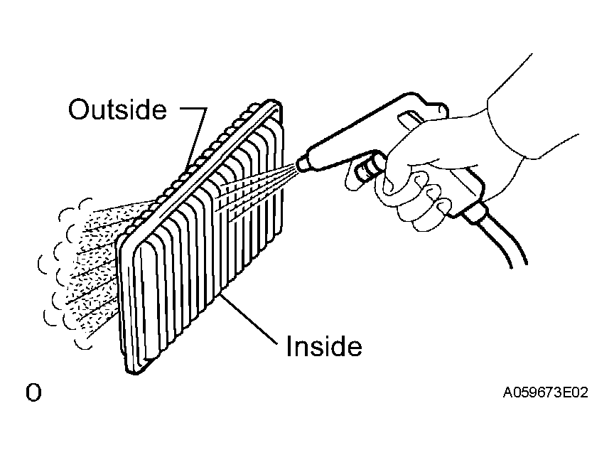

General Maintenance
- INSPECT DRIVE BELT (See ON-VEHICLE INSPECTION )
- REPLACE SPARK PLUGS
- Check the spark plugs (see ON-VEHICLE INSPECTION ).
- INSPECT AIR CLEANER FILTER
- Remove the air filter.
- Visually check that the air filter is not excessively damaged or oily. If necessary, replace the air filter.
- Reinstall the air filter.
- Clean the filter with compressed air.
HINT:
First blow from the inside of the filter thoroughly, and then repeat from the outside.
- REPLACE AIR CLEANER FILTER

Courtesy of © TOYOTA, LICENSE AGREEMENT TMS1002- Replace the air filter with a new one.
- REPLACE ENGINE OIL AND OIL FILTER (See ON-VEHICLE INSPECTION )
- REPLACE ENGINE COOLANT (See ON-VEHICLE INSPECTION )
- INSPECT GASKET IN FUEL TANK CAP (See ON-VEHICLE INSPECTION )
- INSPECT FUEL LINES AND CONNECTIONS, FUEL TANK VAPOR VENT SYSTEM HOSES
- Visually check the fuel lines for cracks, leakage, loose connections, deformation.
- INSPECT EXHAUST PIPES AND MOUNTINGS
- Visually check the pipes, hangers and connections for severe corrosion, leaks or damage.
- INSPECT VALVE CLEARANCE (See ADJUSTMENT )